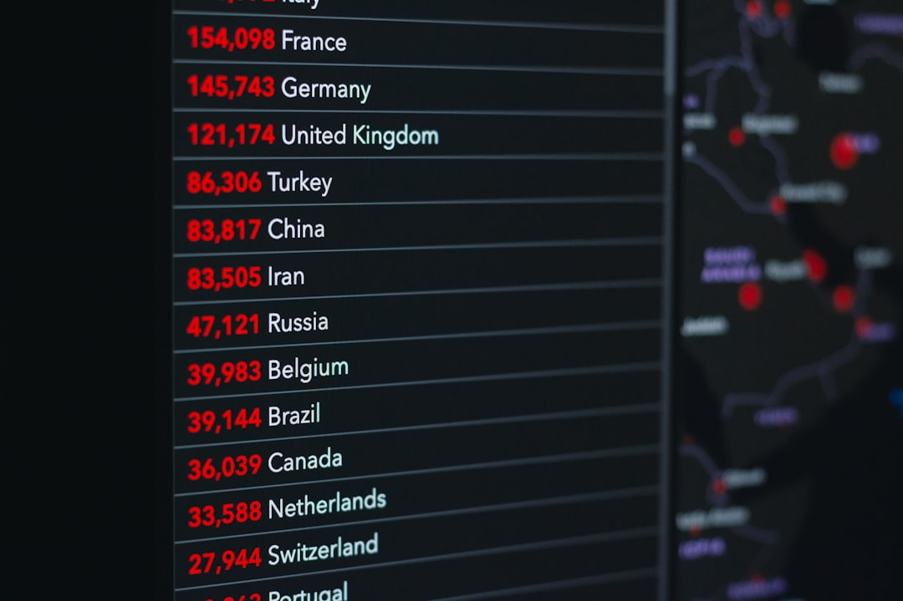

美, AI칩 제3국 우회 차단…한국 데이터센터 소재 수출 변수

미국 상무부 산업안보국(BIS)은 중국 본사 기업이 물리적으로 중국 밖(싱가포르·UAE·말레이시아 등)에 설립한 자회사를 통해 미국산 고성능 AI칩을 구매할 경우에도 수출 허가를 요구하는 지침을 발표했다. 기존 규제는 '중국 내 최종 사용자'에만 적용됐으나, 이제는 소유 구조 기준으로 중국 기업의 제3국 법인도 규제 대상에 포함된다.
미국 하원 외교위원회는 AI칩 수출 통제를 더욱 강화하는 법안 패키지를 심의 중이다. 클라우드 서버를 통한 AI칩 연산 능력의 간접 접근(API 방식)까지 허가 대상에 포함하는 내용이 골자다. 법안이 통과되면 한국 클라우드 기업이 중국 고객에게 AI 서비스를 제공하는 경우도 규제망에 걸릴 수 있다.
대만도 중국에 대한 AI 반도체 수출 통제 강화를 검토 중이다. 일정 성능(H100 등가 이상) AI칩의 중국 내 모든 고객 판매 제한이 핵심이다. 대만의 규제가 현실화되면 삼성전자·SK하이닉스의 HBM(고대역폭메모리)도 TSMC 경유 AI칩 패키지에 포함되어 간접 규제를 받는 구조가 형성된다.
딥시크(DeepSeek)는 약 1년 전부터 자체 AI칩 개발 프로젝트를 가동했으며, 최근 반도체 전문 인력 채용을 본격 확대하고 있다. 엔비디아·화웨이 칩 의존을 줄이는 것이 목표다. 이 프로젝트가 현실화되면 중국발 고성능 AI칩 수요가 비(非)미국 경로로 이동하면서 글로벌 AI칩 밸류체인이 두 갈래로 분열된다.
이번 규제 확대의 핵심 변화는 '장소'에서 '소유 구조'로의 규제 기준 전환이다. 이제 어디에 있느냐가 아니라 누구 소유냐가 규제를 결정한다. 한국 기업이 싱가포르 소재 중국계 기업에 AI 서버 소재를 공급하다가 규제 위반으로 제재받는 시나리오가 현실적 가능성이 됐다.
딥시크의 자체 칩 개발은 미국 수출 통제가 낳은 역설적 효과다. 제재가 강할수록 중국은 자체 기술 개발 속도를 높이고, 장기적으로 엔비디아 등 미국 칩 의존도를 줄이는 방향으로 나아간다. 단기 봉쇄가 중기 기술 자립을 촉진하는 구조다. 한국 AI 서버 소재 기업들은 '엔비디아 생태계'에 집중된 포트폴리오가 중장기적으로 취약해질 수 있음을 인식해야 한다.
글로벌 AI칩 시장이 '미국 동맹국 체계'와 '중국 자립 체계'로 이분화되는 속도가 빨라지고 있다. 한국은 반도체 생산국이면서 동시에 중국 수출 의존도가 높은 이중 포지션에 있어, 어느 한쪽을 선택하면 다른 쪽에서 보복이 오는 구조다. 기술 중립 포지션이 가능한 마지노선을 전략적으로 설정해야 할 시점이다.
미국·동맹국 AI칩 공급망 편입 기업: TSMC 생산 칩에 한국산 HBM을 탑재하는 엔비디아 GB시리즈 공급망에 속한 SK하이닉스·삼성전자는 규제 수혜의 핵심에 있다. 중국 경쟁 업체들이 배제될수록 동맹국 메모리 반도체에 대한 수요 집중도가 높아진다.
AI 서버 열관리·구조 소재 한국 공급사: 엔비디아 GB200·블랙웰 시리즈용 액침냉각 소재, 열계면물질(TIM), 고성능 구리 기판 등을 공급하는 국내 소재 기업들은 중국 배제에 따른 반사 이익을 누린다. 단, 최종 사용자 검증 의무가 생기므로 수출 컴플라이언스 체계 구축이 선행돼야 한다.
비중국 AI 인프라 투자 국가(인도·사우디·UAE): 미국 AI칩 규제에서 자유로운 인도·중동이 AI 데이터센터 투자를 급속히 늘리고 있다. 이들 지역 AI 인프라에 소재를 납품하는 한국 기업들은 새로운 수요처를 확보한다.
싱가포르·UAE에 생산 거점을 둔 중국계 기업들: 우회 조달 경로가 막히면서 이들 기업의 AI 개발 일정에 차질이 생긴다. 단기적으로는 화웨이 910B·910C 등 자국산 칩으로 대체하지만, 성능 격차(엔비디아 H100 대비 약 40% 수준)로 AI 경쟁력이 약화된다.
중국 AI 소프트웨어 생태계 의존 한국 스타트업: 딥시크 등 중국산 AI 모델을 활용하거나 중국계 클라우드 서비스를 이용하는 국내 AI 스타트업들은 규제 확산 시 서비스 연속성 리스크에 노출된다.
투자자 관점: SK하이닉스의 HBM3E·HBM4 납품 물량 추이와 함께 '최종 사용자 확인서(EUC)' 관련 컴플라이언스 비용이 실적에 미치는 영향을 주시해야 한다. 규제 준수 비용이 증가하더라도 경쟁 제품(중국산)이 아예 배제되는 구조이므로 마진 방어력은 오히려 강화된다.
구매담당자 관점: AI 서버·데이터센터 관련 소재를 납품하거나 구매하는 모든 기업은 지금 당장 '최종 사용자 검증(End-User Verification)' 프로세스를 내부 조달 규정에 추가해야 한다. 특히 싱가포르·UAE·말레이시아 소재 거래처의 소유 구조를 재확인하는 것이 우선 과제다.
산업 전략가 관점: 한국 정부는 미국 BIS와 수출통제 정보 공유 협정(ECSA)을 빠르게 업데이트하고, 국내 기업들이 허가 프로세스를 예측 가능하게 진행할 수 있도록 가이드라인을 조속히 마련해야 한다. 규제 불확실성 그 자체가 한국 수출 기업들의 비용이다.
실제 조달 현장에서는 — 미국 BIS 규제 강화 이후 아시아 AI 서버 조립 업체들이 한국 소재 공급사에 '최종 사용자 확인서(EUC)'와 함께 소유 구조 증빙(주주 명부)을 요구하기 시작했다. 과거 10일이면 됐던 수출 서류 준비가 이제 4~6주가 소요되는 사례가 늘고 있다. 수출 컴플라이언스 전담 인력을 지금 채용하지 않으면 2026년 하반기 납기 지연이 반복된다.
이 포스팅은 쿠팡 파트너스 활동의 일환으로 수수료를 제공받습니다.